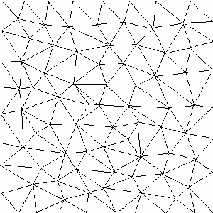
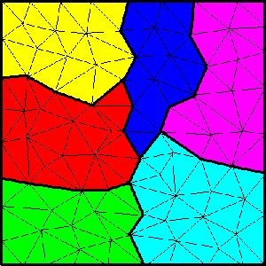
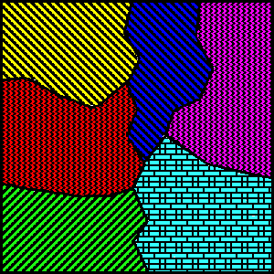
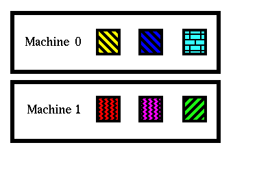

|  |  |
| a) Sample two dimensional mesh | b) Classification of mesh on partition model |
|  |  |
| c) Classification on process model | d) Classification on machine model |
The partition model is one level of a hierarchical classification. A mesh entity is classified on a partition model entity. Partition model entities (represented by the colors in (b)) are classified on process model entities (c), allowing multiple partitions to be assigned to a single process or thread of execution. And the process model entities are classified on a machine model (d), allowing multiple processes to be assigned to a single machine ``entity'' (a physical machine or processor), which is useful with symmetric multi-processing (SMP), different network speeds, or heterogeneous processors.
The next generation of parallel architecture is likely to consist of SMP nodes connected by a fast (or potentially not so fast) network. A possibility is a machine similar to an IBM SP2, but with multiple processing units on each node. This sort of architecture can be accounted for in the model hierarchy by assigning multiple processes to a single machine. Boundaries between submeshes which are classified on different partition models but which are assigned to the same processor (or at least the same address space) will not need duplicated entities and can access information about the neighboring processor's mesh without communication. This is much less costly than a true interprocessor message, which must traverse some sort of network. This type of information should be available to a load balancer, and this model hierarchy will provide for that.